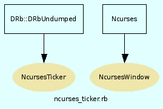

|  |
Methods
Included Modules
- Ncurses
Public Class methods
initialisiert die Ncurses-Umgebung
[ show source ]
# File ncurses_ticker.rb, line 8 def initialize(title="ib_ticker") @win=Array.new Ncurses.initscr() Ncurses.cbreak() Ncurses.noecho() # start_color muss alle Farb-Definitionen vorangehen Ncurses.start_color() Ncurses.init_color(COLOR_WHITE,1000,1000,1000) Ncurses.init_pair(1,COLOR_BLACK, COLOR_WHITE) Ncurses.init_pair(2, COLOR_BLUE, COLOR_WHITE) Ncurses.init_pair(3, COLOR_GREEN, COLOR_WHITE) Ncurses.init_pair(4, COLOR_RED, COLOR_WHITE) @color={ "normal" => Ncurses.COLOR_PAIR(1) , "blue" => Ncurses.COLOR_PAIR(2) , "green" => Ncurses.COLOR_PAIR(3) , "red" => Ncurses.COLOR_PAIR(4) } @dimFenster={ :width =>29, :height => (Ncurses.LINES / 1).to_i-1} # /1: volle Bildschirmhohe , /2: halbee höhe... e=Ncurses::WINDOW.new(0,0,0,0) e.bkgd(@color["normal"]) e.attron(@color["blue"]) e.mvprintw(0,(Ncurses.COLS / 2)-5 ,title) e.attroff(@color["blue"]) Ncurses::Panel::PANEL.new(e) end
Public Instance methods
erzeugt ein neues Fenster und gibt die FensterNummer zurueck
[ show source ]
# File ncurses_ticker.rb, line 37 def allocateWindow(stock,colorBorder='normal', colorWindow='normal') # Ncurses::WINDOW.new(Höhe, Breite, X-Pos, Y-Pos) # Ist Höhe oder Breite 0, wird die maximal mögliche Ausbreitung verwendet countFenster=@win.size if (countFenster+1)* @dimFenster[:width] > Ncurses.COLS top=@dimFenster[:height]+2 colFenster= countFenster- (Ncurses.COLS/@dimFenster[:width]).to_i else top=1 colFenster=countFenster end eins = Ncurses::WINDOW.new(@dimFenster[:height] , @dimFenster[:width], top, colFenster*@dimFenster[:width]) eins.bkgd(@color[colorBorder]) # Nun malen wir noch hübsche Rahmen in unser Fenster eins.border(*([0] * 8)) # Ausserdem sollten wir sie einen Panel hinzufügen, damit sie immer # aktualisiert werden, wenn wir Ncurses::Panel.update aufrufen. Bei # Ncurses wird erst alles in einen Buffer geschrieben und erst mit # entsprechenden Refresh-Aufrufen wirklich auf dem Bildschirm dargestellt! Ncurses::Panel::PANEL.new(eins) # Nun machen wir uns unsere inneren Fenster, damit der Rahmen nicht # übermalt wird, machen wir sie um je ein Zeichen pro Rand kleiner @win[countFenster] = Ncurses::WINDOW.new(@dimFenster[:height] - 2, @dimFenster[:width] - 2, top+1, (colFenster*@dimFenster[:width]) +1) @win[countFenster].bkgd(@color[colorWindow]) # Und wieder fügen wir sie dem Panel hinzu Ncurses::Panel::PANEL.new(@win[countFenster]) # Wenn wir am Ende des Fensters angekommen sind, soll weiterscrollt werden @win[countFenster].scrollok(true) eins.mvprintw(0,4,stock.ibSymbol) display countFenster,"" countFenster end
schreibt den Text auf das Fenster
[ show source ]
# File ncurses_ticker.rb, line 80 def display(window,message,color="normal") @win[window].attron(@color[color]) @win[window].printw(message<<"\n") @win[window].attroff(@color[color]) Ncurses::Panel.update Ncurses.doupdate end
AufraeumAktionen zum Ende der Apllikation
[ show source ]
# File ncurses_ticker.rb, line 99 def finishIt Ncurses.echo() Ncurses.nocbreak() Ncurses.nl() Ncurses.endwin end
diese Routine vertraegt sich nicht mit dem KursImport
[ show source ]
# File ncurses_ticker.rb, line 88 def getInput loop do display(0,'press a key or "d" to exit') ch=@eins.getch display(0,"you pressed #{ch}") break if ch==100 end end